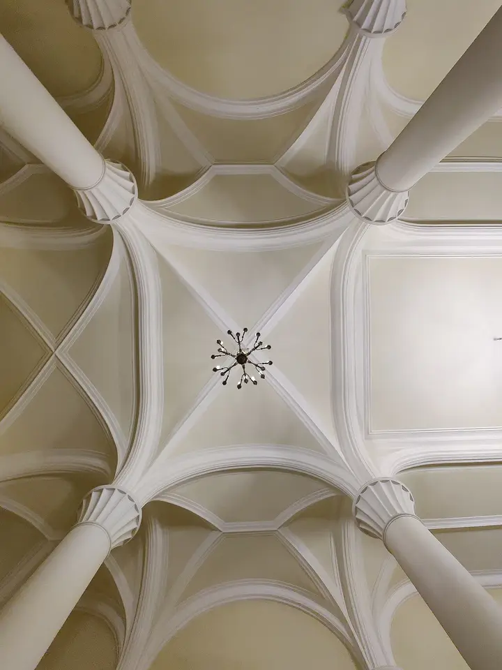

Подборку собрали 20 октября, прошедшие события скрыты. Свежая афиша — на главной

Фото: Анастасия Юрьевна Львова, CC BY-SA 4.0 · Wikimedia Commons
Театр · Центр
Театр им. Ленсовета
Живой репертуарный театр у Владимирской: яркие режиссёрские спектакли и сильная труппа.
- ₽₽ · 1 500–3 000 ₽ на человека
- Новое в каталоге
- в 2 планах
- 2 события в афише
Позвать сюда: Театр им. ЛенсоветаОткрыть в каталоге: Театр им. ЛенсоветаМаршрут до места: Театр им. Ленсовета
Адрес и детали
- Адрес
- Владимирский пр., 12
Открыть на Яндекс Картах (в новой вкладке) - Метро
- м. Достоевская
- Район
- Центр
- Цена
- 1 500–3 000 ₽ на человека
- Телефон
- +7 (812) 713-21-91
- Проверено
- работает — проверили в октябре 2026
Планы с этим местом 2
- Театр им. Ленсовета · Театр · м. Достоевская
- 2 минуты пешкомEl Copitas · Коктейльный бар
Яркий спектакль в Театре Ленсовета, а потом пара минут до мексиканского бара, где бармен узнаёт ваши вкусы и мешает напиток на текиле или мескале.
Открыть план: Спектакль и бар без менюПозвать сюда: Спектакль и бар без меню
Фото: Анастасия Юрьевна Львова, CC BY-SA 4.0 · Wikimedia Commons
- Театр им. Ленсовета · Театр · м. Достоевская
- 3 минуты пешкомDuo Asia · Паназиатский ресторан
Яркий режиссёрский спектакль у Владимирской, а через пара минут пешком — севиче, лапша и сильные десерты в Duo Asia на Рубинштейна.
Открыть план: Театр Ленсовета и Азия от DuoПозвать сюда: Театр Ленсовета и Азия от Duo
Фото: Анастасия Юрьевна Львова, CC BY-SA 4.0 · Wikimedia Commons

Афиша площадки 2
Театр им. Ленсовета, Большая сцена · м. Достоевская · 500–5 500 ₽ · 16+
Детективная дуэль двоих: знаменитый дирижёр и назойливый поклонник в гримёрке после концерта. Пьеса Дидье Карона, 1 ч 40 мин без антракта — ужин успеваете.
Подробнее: Фальшивая нотаПозвать сюда: Фальшивая нотаБилеты : Фальшивая нота (страница с билетами, откроется в новой вкладке)
Фото: Анастасия Юрьевна Львова, CC BY-SA 4.0 · Wikimedia Commons
Театр им. Ленсовета, Малая сцена · м. Достоевская · 4 000–5 000 ₽ · 16+
Лирическая комедия Александра Галина: родные устраивают вдовцу-пенсионеру смотрины с тремя колоритными невестами. Камерная Малая сцена, начало в 19:00 или 19:30.
Подробнее: РетроПозвать сюда: РетроБилеты : Ретро (страница с билетами, откроется в новой вкладке)
Фото: Анастасия Юрьевна Львова, CC BY-SA 4.0 · Wikimedia Commons
Похожие рядом

Что ещё рядом
Как позвать
- Выбери план, место или событие — в карточке адрес, цены и маршрут в Яндекс Картах.
- Нажми «Позвать сюда» — соберётся приглашение-игра для свидания или голосование для компании.
- Отправь ссылку в любой мессенджер: тебе ответят, а компания отметит, куда и когда может. Бесплатно и без регистрации.